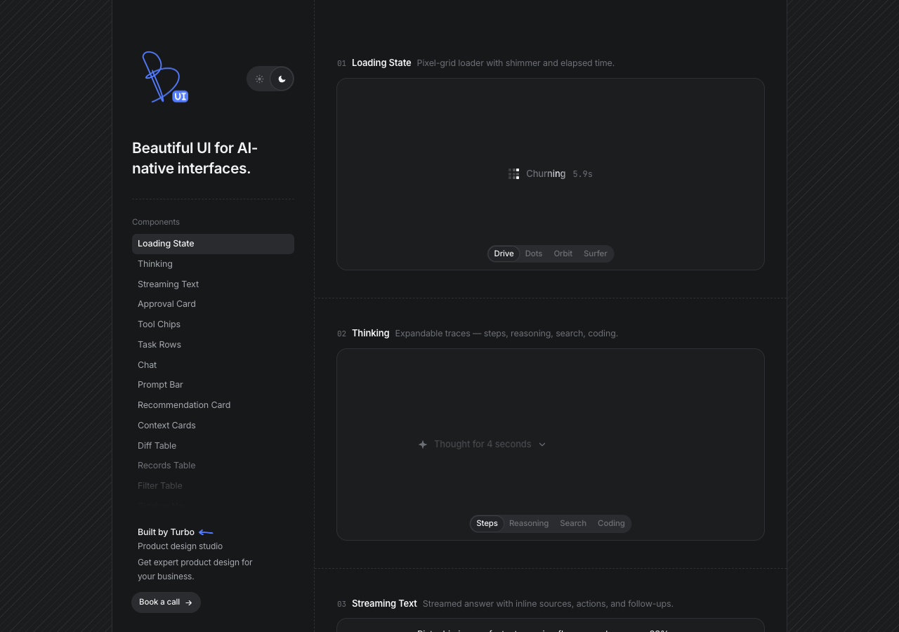
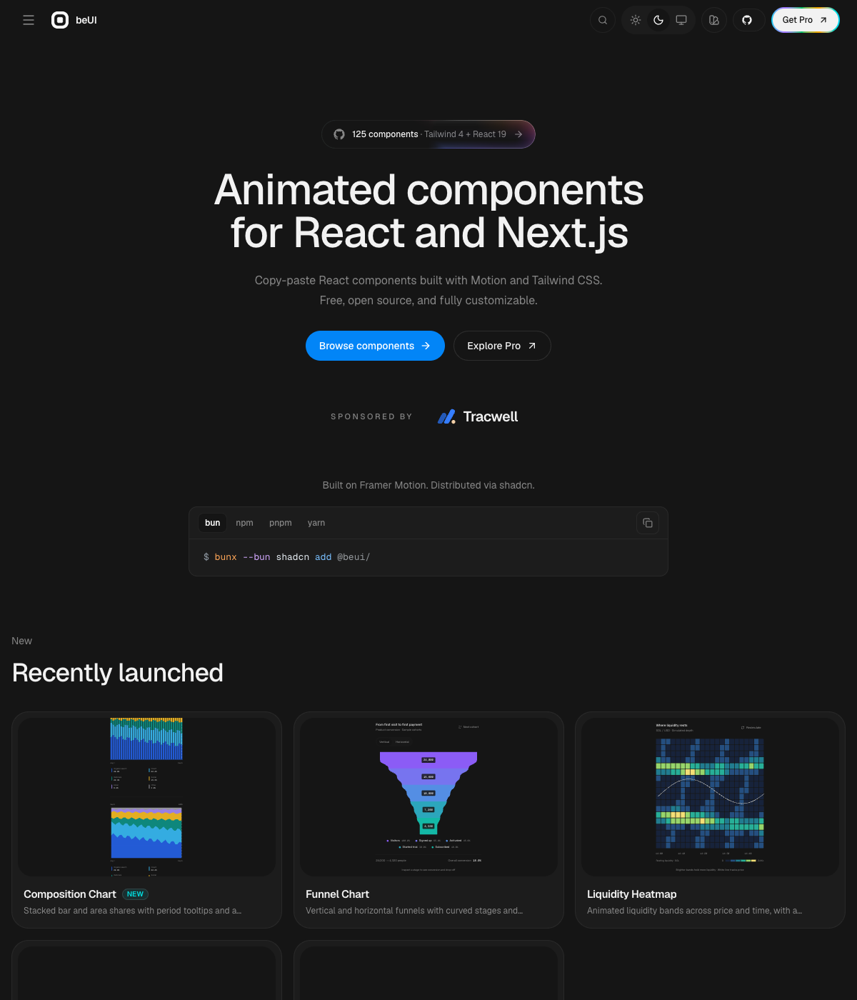
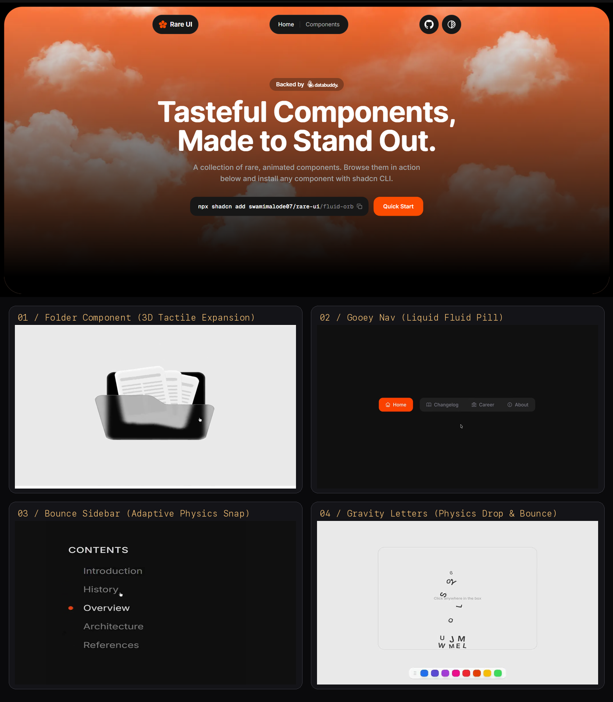
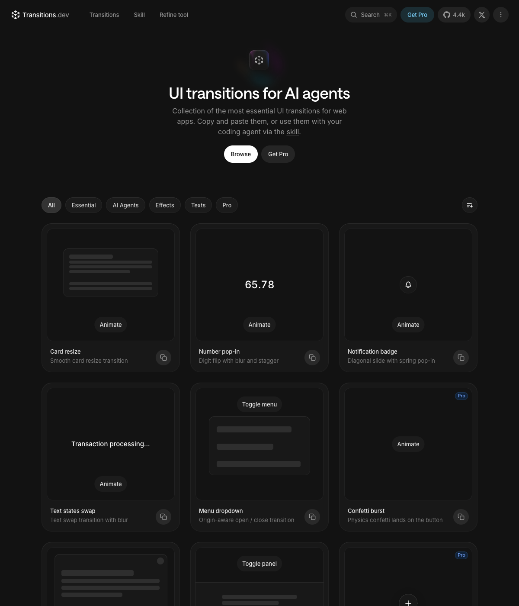
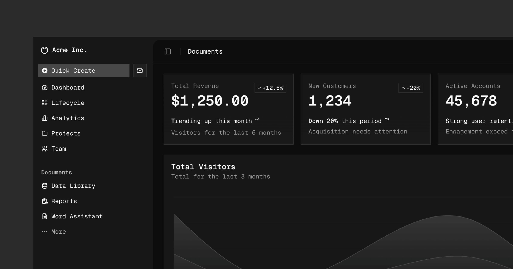

5 个让 Claude Code 抄作业 的封神 UI 库
写代码通常不是最难的，界面审美才容易卡人。大家都感觉得到：大模型默认写出来的 UI 塑料感极强，泛滥的蓝紫渐变和圆角大卡片让人审美疲劳。想要让 Claude Code、Codex 这类 Agent 写出真正有手感、有呼吸感的现代界面，最好的办法就是把这 5 个顶尖 UI 库直接喂给它当“灵感母体”。
 木鱼拓哉2026-09-27AI CODING & TASTE阅读约 10 分钟
木鱼拓哉2026-09-27AI CODING & TASTE阅读约 10 分钟最近 X 上有条很火的观点：写逻辑和业务代码往往是 AI 的拿手好戏，但界面审美才是卡住产品质感的真正门槛。很多人习惯让 AI 从零脑补样式，结果生成一堆像上个世代外包后台一样的千篇一律界面。其实最聪明的做法，是直接把经过审美验证的优质组件库交给 Agent，让它找组件、抄实现、剥离颜色变量，再丝滑放进项目里。
本文整理了 5 个风格各异、直击 Agentic 编程痛点的顶级 UI 资源，并附带一套开箱即用的 GitHub Agent Skill，教你的 Agent 自动按意图选型。
01 Beautiful UI — AI 原生界面的设计原语
由 Turbo 设计工作室打造，专门为大模型原生交互、Agent 工作台量身定制的组件库。做 AI 产品时不要再手写简陋的转圈 loading 了，它把大模型交互拆解成了极具质感的设计原语。

Thinking State可展开折叠的多步骤推理链与耗时计时器
Streaming Text流式打字输出，集成内联 Sources 来源和追问
Tool Chips工具调用、代码修改的紧凑胶囊状态条
Approval CardHuman-in-the-loop 人类审核与高危确认卡片
Prompt Bar带 @ 知识库、/ 快捷指令与模型切换的现代输入栏
Diff TableAI 自动变更表格数据的即时 Diff 对比视图
02 beUI — 动效丝滑的现代 React 组件库
超过 125 个基于 Framer Motion + Tailwind CSS 的现代交互组件，完全支持通过 shadcn CLI（npx shadcn add @beui/...）直接将代码拷入本地项目。拥有类似 Apple 原生般的弹性形变与触感。

Dynamic Island仿 iOS 灵动岛的弹性胶囊形变与实时状态更新
Morphing Modal多步骤无感切换、高度平滑自适应的形变弹窗
macOS Dock带弹性指示器与微缩放手感的底部悬浮坞
Animated Toast具备空间堆叠感与滑动移除物理特性的消息通知
Tilt Card随光标位置 3D 浮动与动态眩光的高光卡片
Animated Charts流动性热力图、盘口深度、漏斗图等高阶数据图表
03 Rare UI — 打破同质化的稀有创意库
如果你讨厌目前千篇一律的 SaaS 管理台风格，想要让个人主页、产品 Landing Page 拥有让人一眼记住的“核心记忆点”，Rare UI 就是绝佳的灵感宝库。纯代码所有权，开箱即改。

folder-component极具拟物感的 3D 展开/收拢式交互文件夹
proximity-sidebar根据鼠标移动距离产生自适应感应与吸附的侧边栏
family-drawer丝滑如流体的高质感非标抽屉
gravity-letters物理掉落与碰撞检测的趣味文本动效
matrix-orb极客风流体与动态空间球体组件
04 Transitions.dev — 专治动画僵硬的物理缓动系统
绝大多数 AI 写的动画之所以“假”，是因为它们只会写 transition: all 0.3s ease。Transitions.dev 专门提炼了**最核心的转场状态与物理 Motion Tokens**，甚至直接自带 Coding Agent Skill，能让你的界面瞬间产生呼吸感。

Ease Bouncecubic-bezier(0.34, 1.36, 0.64, 1) 真实物理回弹Smooth Outcubic-bezier(0.22, 1, 0.36, 1) 极度丝滑出入Stagger Delay40ms 逐项阶梯微延迟，消除机械齐步走Micro Distance4px ~ 8px 微位移配合高斯模糊淡入05 shadcn/ui — 工业级底座与代码所有权标准
掀起现代前端“Copy-Paste 哲学”的母体。基于 Radix UI 处理绝对严谨的键盘导航与无障碍标准（a11y），所有代码直接暴露在你的项目里。它依然是所有大模型掌握得最透彻、生态最丰富的底座。

PrimitivesDialog, Sheet, Popover, Dropdown, Command (⌘K)
No Blackbox没有封装成黑盒的 npm 包，所有 Tailwind 样式完全受控
Ecosystem Hub上面介绍的 beUI、Rare UI 都是它的生态衍生注册表
06 怎么让 Claude Code / Codex 自动选择？
把这些资源存进收藏夹很容易吃灰。为此，我参考 Matt Pocock 的开源规范，把整套选型路由规则、组件清单与代码清洗规范整理并开源到了公开仓库：Libeny/skills，并将 ai-ui-taste 作为首个核心技能上线。
⚡ 方式 1：一句话直接喂给你的 AI（免安装，最简单）
从现在起，在编写或重构前端 UI 时，请严格遵循 https://github.com/Libeny/skills 中的 skills/ai-ui-taste 意图路由规范：
1. 涉及 Agent/大模型对话与思考交互 → 参考 Beautiful UI (https://beautifului.dev)
2. 涉及现代丝滑微动效与灵动岛 → 参考 beUI (https://beui.dev)
3. 涉及拒绝千篇一律的特色记忆点组件 → 参考 Rare UI (https://rareui.com)
4. 涉及动效僵硬/调校物理缓动曲线与延迟 → 参考 Transitions (https://transitions.dev)
5. 涉及通用工业级组件与 a11y 底座 → 参考 shadcn/ui (https://ui.shadcn.com)
提取实现时必须解耦硬编码色值，严格映射到本项目现有的语义主题变量。🛠️ 方式 2：通过 skills.sh 命令行拉入工程
# 在任意前端项目根目录下运行，自动将技能以文件形式拉入工程
npx skills add Libeny/skills工作流原则：
1. 意图路由：做 Agent 对话找 Beautiful UI；做转场微动效找 beUI；避免同质化找 Rare UI；调动效物理感找 Transitions。
2. 样式解耦：提示 Agent 提取骨架与动画参数，但将色值自动映射到工程现有的 Tailwind 语义变量。